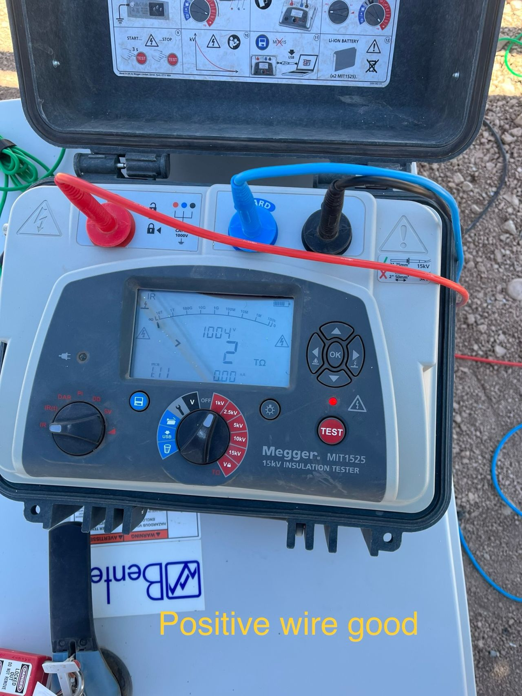

Power Distribution
Switchgear, disconnects, distribution panels, feeders, transformers and equipment power modifications.
- New installation and replacement
- Feeder and circuit modifications
- Equipment energization support
Electrical construction, corrective maintenance, preventive maintenance, testing and shutdown support for facilities where safety, documentation and continuity matter.
From new installations and equipment changes to outage work, diagnostics and closeout documentation, each engagement is organized around safe execution and reduced operational disruption.
Switchgear, disconnects, distribution panels, feeders, transformers and equipment power modifications.
Power and control-side support for motors, VFDs, MCCs and production equipment.
Structured electrical testing to help identify degradation, faults and abnormal conditions.
Planned work windows with defined scope, sequencing and restoration priorities.
Repeatable inspection and maintenance programs tailored to facility equipment and risk.
Systematic response for failed equipment, nuisance trips, loss of control power and damaged components.
Testing scope is defined by equipment condition, customer requirements and applicable procedures. Results can be organized into project records and closeout documentation.

Define equipment, operating constraints, hazards and desired outcome.
Build scope, schedule, materials, access and shutdown requirements.
Perform work with clear communication and controlled sequencing.
Verify installation or repair against the agreed acceptance criteria.
Deliver findings, photos, test records and recommendations.
A structured maintenance window for motor-control equipment, adapted to site procedures, available outage time and equipment condition.
Discuss Your Maintenance ScopeVisual inspection, cleaning, mechanical condition checks and identified electrical tests.
Defined after equipment count, access and outage constraints are reviewed.
Completed checklist, photos, readings, deficiencies and prioritized recommendations.
One-line information, equipment list, site procedures and operational priorities.
Scope and execution are reviewed against the applicable NEC requirements, customer procedures, OSHA expectations and NFPA 70E electrical-safety practices. Testing standards and acceptance criteria are agreed before work begins.
Yes. The schedule can be built around production windows, site access and restoration priorities.
Testing scope can include readings, equipment identification, photos, findings and recommended next actions.
Yes. A structured diagnostic approach can help determine whether repair, temporary stabilization or replacement is appropriate.
Yes. Site-specific access, LOTO, PPE and work-control requirements are reviewed before execution.
We will help define the next practical step.